Llorente: "Bielsa siempre me pide más"
Sun, 27 Nov 2011 07:00:00 +0100
Con la llegada de Marcelo Bielsa, el mundo futbolístico de Fernando Llorente (Pamplona, 1985) cambió. De pronto, el poste central debía bambolearse y participar en el juego colectivo del equipo más allá de ser referente del aéreo. Le costó, según dice, pero lo agradeció. Su actitud no ha variado desde hace años. Lleva casi 80 partidos oficiales consecutivos alineándose en el once inicial y está a punto de ser el futbolista de campo con más participaciones seguidas en el Athletic (ahora es Urkiaga). Hoy, con Bielsa y sin demérito de Joaquín Caparrós, que le dio el aire que necesitaba para resurgir tras un periodo negro, Llorente se siente mejor jugador en un equipo mejor.
Íñigo Martínez revienta Heliópolis
Sun, 27 Nov 2011 14:13:00 +0100
En un final de infarto, una obra de arte de Íñigo Martínez en el minuto 92 propició el triunfo de la Real Sociedad ante un Betis que fue capaz de igualar un 0-2 en contra con todo perdido. El golazo de Íñigo Martínez, que reventó Heliópolis con un zurdazo desde su propio campo, no es el primero que anota de esta forma el central del conjunto donostiarra. Ya en el clásico vasco, en Anoeta, el defensa anotó otro tanto de la misma manera, de un disparo tan lejano como preciso. Entonces, el gol no le sirvió de mucho a su equipo (ganó el Athletic por 1-2). En Sevilla, valió un triunfo cuando la Real daba por bueno el empate y el Betis, lleno de emoción, desbocado, no supo entender la valía de la igualada. Cayó por el pelotazo sublime de Íñigo Martínez, pero también por su obsesión de morir en el área de la Real, con cuatro delanteros, sin saborear lo importante que hubiera sido un punto. El golazo fue el punto y final a un partido enloquecido, de dominio alterno, donde el orden de la Real pudo más que este Betis sin control, sin freno, que ha entrado en barrena. Respira la Real y golpe durísimo para el Betis.

Caparrós logra su primera victoria con el Mallorca
Sun, 27 Nov 2011 20:37:00 +0100
Joaquín Caparrós logró su primera victoria como entrenador del Mallorca, después de seis jornadas de empates y derrotas. Fue en un mal encuentro entre dos equipos de la clase turista de la Liga, hambrientos de puntos y con inquietantes perspectivas de futuro.

Un partido en una jugada
Sat, 26 Nov 2011 22:17:00 +0100
No fue el Madrid de los últimos tiempos, ese equipo que al primer parpadeo manda a la lona al adversario. Esta vez un lance le abrió el camino cuando el Atlético apretaba en un derbi más que en los últimos 12 años. Logró enredar al Madrid durante 25 minutos e incluso ponerse en ventaja. Hasta que Courtois se cruzó en el camino de Benzema. El meta fue expulsado y Cristiano embocó el penalti. Lo demás fue una quimera para los rojiblancos.
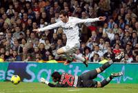
Un boquete de seis puntos
Sun, 27 Nov 2011 17:16:00 +0100
"Queda mucha Liga", repetían el sábado con insistencia los miembros de la expedición del Barcelona tras caer ante el Getafe (1-0). "Competimos contra un gran rival y tendremos pocas oportunidades de fallar otra vez", añadió el técnico, Pep Guardiola, consciente de que la distancia que les separa del Real Madrid acababa de crecer hasta los seis puntos (28 por 34), algo que no se veía desde 2008. Ningún equipo dirigido por José Mourinho, entrenador blanco, ha desperdiciado nunca una renta de al menos tres puntos para acabar siendo campeón. Y la última vez que los azulgrana le recortaron una ventaja de seis al Madrid para acabar ganando la Liga, Guardiola era un chaval de 21 años que no había jugado ni medio centenar de partidos como culé. Corría 1992 y Johan Cruyff se sentaba en el banquillo del Camp Nou.
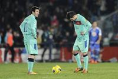
Muere a los 42 años Gary Speed, técnico de Gales
Sun, 27 Nov 2011 14:37:00 +0100
El seleccionador de Gales, Gary Speed, ha muerto a los 42 años, según ha comunicado la Federación de fútbol galesa a través de un escueto comunicado. "Transmitimos nuestras condolencias a la familia y pedimos a todo el mundo que respete la privacidad de sus familiares en estos momentos muy tristes", reza la nota. Según la agencia Reuters, la policía ha confirmado haber encontrado el hombre ahorcado en su casa de Huntington, en Chester (noroeste de Inglaterra) y ha afirmado que no existen "circunstancias sospechosas alrededor del fallecimiento".
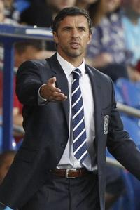
Contra la mala pata, buen pie
Sat, 26 Nov 2011 23:25:00 +0100
Eneko, Fito, Mackay, Agustín, Rodríguez, Pablo Ruiz... Para enumerar los lesionados del Sabadell y sus dolencias, el doctor Bernat de Pablos necesita emplear casi dos minutos. El equipo catalán ha sufrido desde el principio del campeonato una plaga de bajas que con frecuencia han impedido a su técnico, Lluís Carreras, completar las convocatorias con futbolistas del primer equipo. En el club, sin embargo, nadie quiere usarlas como excusa para explicar el bajón que atraviesa. Revelación de la Segunda División en el arranque de la Liga, admirado por un fútbol de asociación que le elevó al coliderato en la novena jornada, el Sabadell ha encadenado seis jornadas sin ganar, cayendo a la zona media de la tabla. ¿Preocupación? Ninguna. "La norma en Segunda es lo que nos pasa ahora. Lo del principio no era normal", afirma con absoluta calma Carreras, empeñado en salir del bache con el fútbol ofensivo y de toque en el que ha creído siempre. Totalmente comprometidos con su causa, el buen pie de sus jugadores puede ponerle fin a la mala racha hoy ante el Murcia (21.30; C+ Liga/GolT).

La encrucijada de Fernando Alonso
Sun, 27 Nov 2011 20:15:00 +0100
La metamorfosis mental de Fernando Alonso es algo incuestionable después de comprobar la actitud de respeto y contención que ha mantenido con la escudería Ferrari a lo largo de toda la temporada. Frente a la evidencia de que el equipo de Maranello ha sido incapaz de ofrecerle el mejor coche de la parrilla, el doble campeón mundial español se ha mordido la lengua y ha evitado lanzar críticas tan duras y severas como las que vertió en 2007 contra McLaren, y en 2005 y 2006 contra Renault, a pesar de que la marca francesa le abrió las puertas de sus dos únicos títulos. Entonces, Alonso era un guerrillero, un hombre que decía las cosas tal como las sentía, capaz de acusar a su equipo de maltratarle o de dormirse en los laureles cuando era líder del Mundial y tenía en sus manos las armas para seguir ganando -lo hizo en Renault en varias ocasiones-. Ahora, a los 30 años, está donde quería, en Ferrari, y es un piloto que parece haber alcanzado el karma: está en el cielo de la F-1 y mantiene la creencia de que el equipo reaccionará en 2012 para permitirle de nuevo ser campeón mundial.
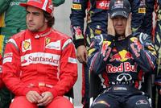
Sofocón del Barça en Santiago
Sun, 27 Nov 2011 15:13:00 +0100
Hubo un momento a catorce minutos del final en el que el Barcelona, doce abajo en el marcador (59-47) sintió que se había metido en una emboscada sin salida, en el que percibió que podía dejarse el liderato de la ACB en su visita a la cancha de Fontes do Sar, feudo de un equipo recién ascendido, en puestos de descenso, pero con alma irreductible y una historia forjada a base de pelear imposibles. Es ante los desafíos hercúleos cuando el Obradoiro ofrece lo mejor. Había llegado al partido entre dudas, con rumores de movimiento en la plantilla después de cinco derrotas consecutivas. Se discutía la aportación de Ebi Ere y Stephane Lasme, dos de los refuerzos del equipo, encargados de aportar un salto de calidad que en este tramo de competición apenas se ha atisbado. Hasta esta mañana.
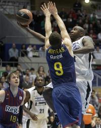
Alonso: "Estoy satisfecho con el cuarto puesto"
Sun, 27 Nov 2011 20:42:00 +0100
Fernando Alonso ha perdido la tercera plaza del Mundial al acabar cuarto en la última carrera del año. "Estoy satisfecho por la carrera de hoy y la cuarta plaza del campeonato", ha asegurado el bicampeón del mundo; "hemos estado todo el año compitiendo contra nosotros mismos, intentando superarnos carrera a carrera y creo que lo hemos conseguido". "Hoy, hemos hecho una buena salida, en la que hemos adelantado a Hamilton, y luego, en una maniobra arriesgada, hemos superado a Button. Por desgracia, como siempre, el ritmo de la carrera nos ha puesto en nuestro sitio", ha explicado el piloto, que quiere olvidar esta temporada, en la que no ha podido plantar cara al alemán Sebastian Vettel; "a ver si el año que viene puede ser bueno, como este, pero con un coche más competitivo para que nos permita a Massa y a mí estar más arriba".
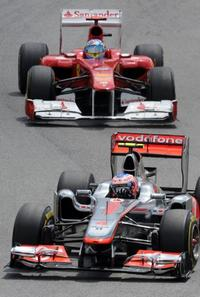
El artista reincidente
Sun, 27 Nov 2011 17:16:00 +0100
Dice Philippe Montanier que en las notas previas del partido habían apuntado que Casto, el portero del Betis, tiene por costumbre jugar muy adelantado. Y dice también que Iñigo Martínez, el central de la Real que le sorprendió desde la raya divisoria del medio campo, suele ensayar mucho estas jugadas en los entrenamientos. No es que Montanier quiera decir que el gol del defensa vizcaíno estuviera en la pizarra del partido, menos cuando el gol de la victoria se produjo en el período añadido del partido.

Osasuna destapa las carencias del Espanyol
Sun, 27 Nov 2011 20:57:00 +0100
La tranquilidad aparente de Osasuna esconde muchas veces un doble mensaje. Parece que un partido sin ritmo le sirva para mantener la concentración y no perderse en batallas viscerales. Eso obliga al rival a llevar la iniciativa aunque a veces, como el Espanyol en este caso, no esté del todo preparado. Se trataba de un cruce de intenciones. Las del Espanyol, volcadas en ese deseo romántico por valorar el pase corto, la movilidad y el espacio libre a pesar de que las bajas puedan condicionar su eficacia. Y las de Osasuna, para quien el partido requería aceleración en pequeñas dosis. Con Nino en el banquillo, José Luis Mendilibar apostó por el duende recién adquirido por Ibra y la velocidad de Lamah para tratar de romper por banda derecha, posición que ocupó Galán por la baja de Javi López. Al contrario que al conjunto de Mauricio Pochettino, a Osasuna no se le reconoce siempre un mismo planteamiento estético, tiene distintas versiones. En Cornellà tocaba recuperar la apariencia de la temporada pasada, esa en la que el equipo concede un espacio marcado para tras él, unos escasos metros del centro del campo propio, levantar una barrera más que contundente.

El Levante está cocido a fuego lento
Sun, 27 Nov 2011 18:05:00 +0100
El Levante no es flor de un día, sino que está cocido a fuego lento. Dispuesto a permanecer en la élite lo que le permita su imaginación, en vuelo celestial desde hace meses. Alentado ante el Sporting por los magníficos pases de Farinós, los quiebros de Barkero y las elegantes cabalgadas de Koné. Si a eso le añade la fiereza defensiva mantenida del año pasado, el equipo levantino ofrece unos números impecables: 23 goles a favor, dos más, por ejemplo, que el Valencia, y 12 en contra, uno menos que su poderoso vecino. El Sporting quiso ser protagonista y, en su audacia, cayó víctima de la mortal contra de los granota. Tan superiores estos en la segunda parte que Juan Ignacio Martínez se puso a hacer cuentas y, entre ellas, le pareció conveniente provocar la quinta tarjeta de Barkero, baja en el Camp Nou en la próxima jornada, de vuelta en el duelo frente al Sevilla.

El Getafe estrangula al Barça
Sun, 27 Nov 2011 00:08:00 +0100
Al Barcelona se le escapa la Liga antes de llegar al Bernabéu. Ha ido descontando puntos de mala manera en cancha ajena. Algunos, en partidos muy exigentes, como los de Mestalla y San Mamés; otros, en accidentes, como el del Camp Nou con el Sevilla. También ha penalizado en estadios aparentemente sencillos, como Anoeta y anoche el Coliséum Alfonso Pérez. Imponente el miércoles en San Siro, perdió la imbatibilidad en el feudo del Getafe y se ha quedado descolgado, a seis puntos del Madrid, cuando solo falta una jornada para visitar Chamartín. Ni siquiera disputar el martes el partido adelantado contra el Rayo le permitirá igualar al Madrid. No perdía el Barça desde el 30 de abril, en el campo de la Real Sociedad. Así que la primera derrota fue también la más cruel porque el margen de error era mínimo.
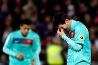
El Liverpool ya está maduro
Sun, 27 Nov 2011 19:21:00 +0100
Al Liverpool la Premier le resulta hoy en día demasiado larga, sobre todo porque le falta profundidad de armario y porque llega de unos años de flaqueza, con más debilidades que otra cosa, crisis de identidad. Pero es un equipo maduro, con galones y futbolistas efervescentes, que puede poner en entredicho a cualquiera, incluso a los más grandes, como el Chelsea, al que batió el fin de semana anterior, y al Manchester City, el líder al que le empató y no le hizo más daño de milagro, el que realizó Hart con las paradas a última hora. Duelo intenso en Anfield donde se enfrentaron dos estilos de juego, el fútbol de toda la vida de Inglaterra y el de la nueva generación, el que corresponde a los quilates y el que se impone con un goteo incesante. Se quedó en tablas, que no en agua de borrajas.
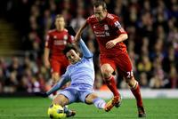
Como el fénix de las cenizas
Sun, 27 Nov 2011 07:00:00 +0100
- "Nunca es demasiado tarde para ser quien podrías haber sido".
Federer es infinito
Sun, 27 Nov 2011 21:12:00 +0100
Es el momento de Roger Federer. Esperan el trofeo, los récords y la historia. Ya no cuenta para nada Jo-Wilfried Tsonga. Ya no hay tiempo de que renazca, de que vuelva y ataque con saña. Todo eso piensa el suizo cuando el O2 Arena le ve sacar por el partido, glorioso mito de la raqueta, Federer con 6-3, 5-4 y su servicio para rematar la faena en la final de la Copa de Maestros. El francés, sin embargo, es de la escuela de la inconsciencia. A hierro mata y a hierro muere. Su tenis está hecho de corazón y tripas, sin lógica que lo contenga. Con Federer pensando en los fotógrafos, Tsonga se procura sus tres primeras bolas de break del duelo (6-3, 5-4 y 0-40). Calla el estadio. Tiembla Federer. Rompe Tsonga y nace un partido nuevo, rebosante de miedos, que retrata mejor que nada al Federer de 2011: coronado (6-3, 6-7 y 6-3) por sexta vez como maestro de maestros, el récord, logró su 70º título en su 100ª final dejando algunos instantes estupendos, pero sin la continuidad que caracterizó a sus mejores tiempos. Hasta desaprovechó un punto de partido en la muerte súbita.
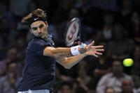
Webber se impone y Alonso acaba cuarto
Sun, 27 Nov 2011 18:58:00 +0100
La amenaza de la lluvia sobrevoló por el circuito de Interlagos durante toda la carrera del Gran Premio de Brasil. Sin embargo, no apareció. La última carrera del curso tuvo un desarrollo lógico, sin grandes incidencias, sin accidentes que pudieran perjudicar a los líderes y dieran opciones a los aspirantes. Nada. Pero hubo una circunstancia que cambió el rumbo habitual de los acontecimientos en este Mundial de fórmula 1: el ganador fue el australiano Mark Webber y no Sebastian Vettel como venía ocurriendo. Y la causa fue que el alemán, ya doble campeón mundial, bajó su ritmo porque su equipo le indicó que tenía problemas con la segunda velocidad y que debía utilizar esta marcha lo menos posible.
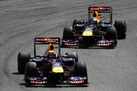
La NBA salva los muebles
Sun, 27 Nov 2011 07:00:00 +0100
El dinero y la imagen prevalecieron como no podía ser de otra forma en la NBA, una Liga que precisamente mima como pocas ambos aspectos. No podía prolongarse más el cierre patronal, salvo que las partes en conflicto decidieran consumar definitivamente su descrédito y arruinaran la competición. Cuando se cumplían 149 días desde que los propietarios echaran el cierre, los representantes de los jugadores y de los clubes dijeron haber visto la luz al final del túnel. Y, tras la enésima reunión maratoniana -15 horas esta vez- en un hotel de Nueva York, dieron por hecho un principio de acuerdo que ahora deberán someter a votación.
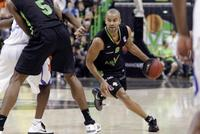
Inyección de autoestima
Sun, 27 Nov 2011 17:22:00 +0100
El Gescrap Bizkaia salió ante su público con el ánimo tocado y las expectativas disminuidas. La obligación de ganar al Estudiantes de Pepu Hernández era ineludible tras las derrotas de la pasada semana ante el Cajasol y el Olympiacos. Los bilbaínos lograron, no sin sufrir, la victoria tras haber sabido dominar el último arreón de los madrileños, que a punto estuvieron de agravar la crisis de los de Fotis Katsikaris.